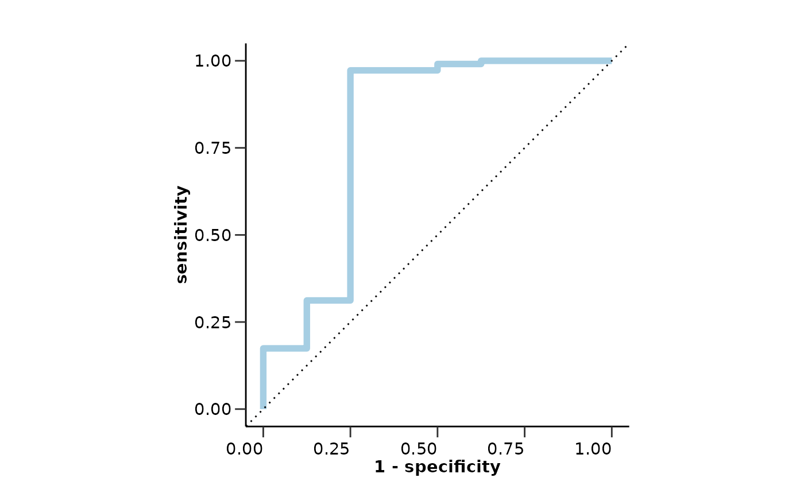
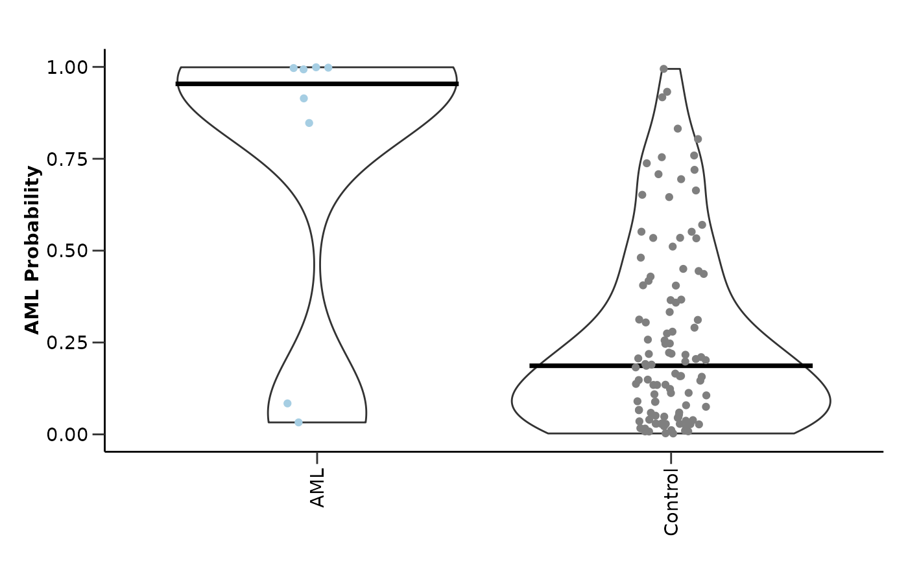
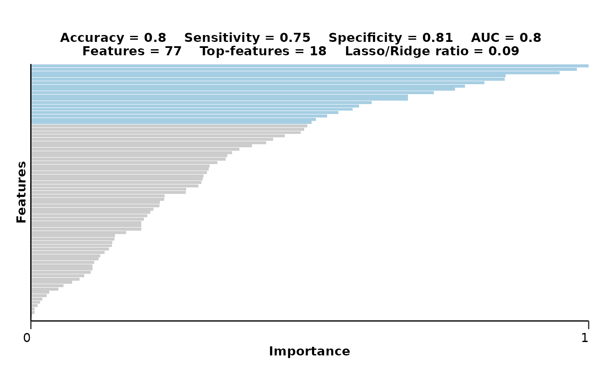
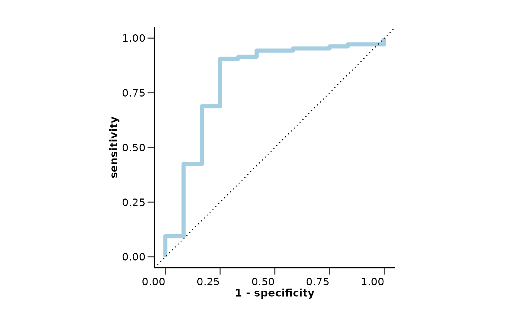
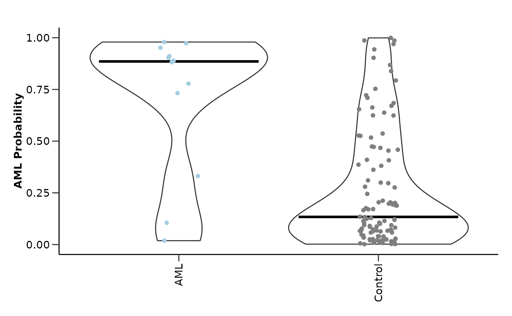
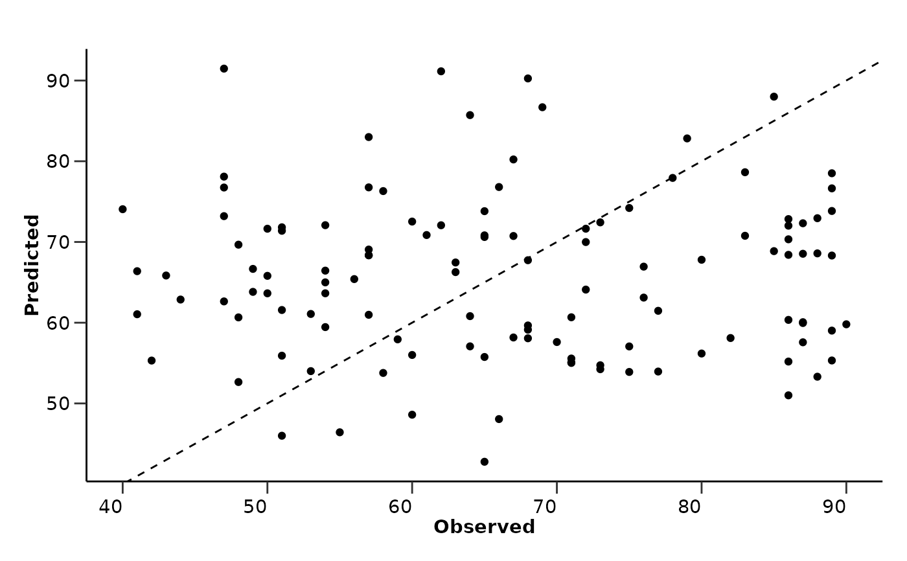
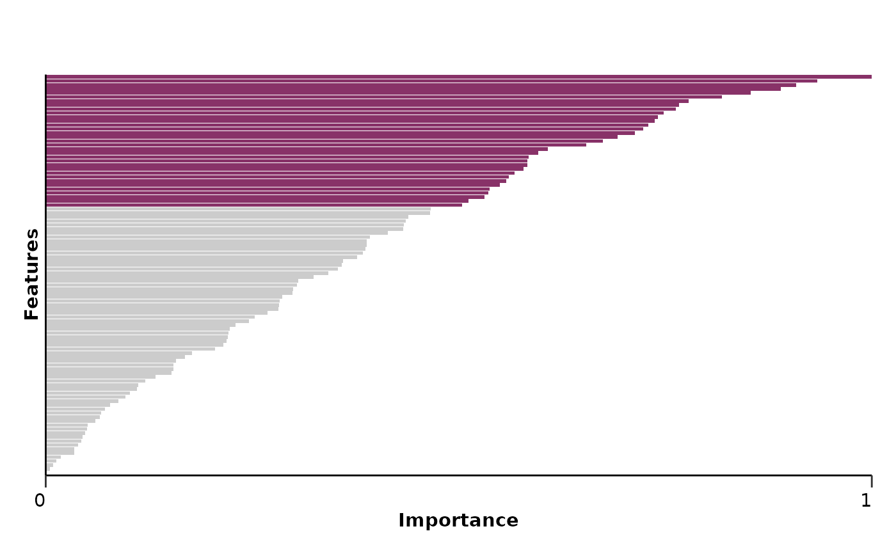
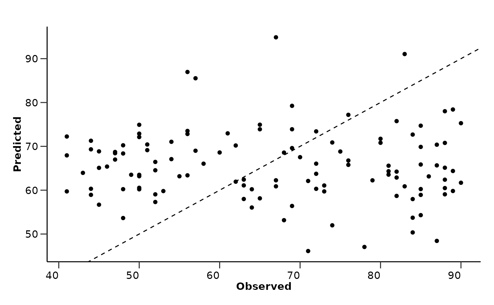

hd_model_test() validates the model on new data. It takes an already tuned model,
evaluates it on the validation (new test) set, calculates the metrics and plots the probability
and ROC curve based on the new data.
Usage
hd_model_test(
model_object,
train_set,
test_set,
variable = "Disease",
metadata_cols = NULL,
case,
control = NULL,
balance_groups = TRUE,
palette = NULL,
seed = 123
)Arguments
- model_object
An
hd_modelobject coming fromhd_model_rreg()andhd_model_rf()binary or multiclass classification.- train_set
The training set as an HDAnalyzeR object or a dataset in wide format with sample ID as its first column and class column as its second column.
- test_set
The validation/test set as an HDAnalyzeR object or a dataset in wide format with sample ID as its first column and class column as its second column.
- variable
The name of the metadata variable containing the case and control groups. Default is "Disease".
- metadata_cols
The metadata variables to include in the analysis. Default is NULL.
- case
The case class.
- control
The control groups. If NULL, it will be set to all other unique values of the variable that are not the case. Default is NULL.
- balance_groups
Whether to balance the groups in the train set. It is only valid in binary classification settings. Default is TRUE.
- palette
The color palette for the classes. If it is a character, it should be one of the palettes from
hd_palettes(). Default is NULL.- seed
Seed for reproducibility. Default is 123.
Value
The model object containing the validation set, the metrics, the ROC curve, the probability plot, and the confusion matrix for the new data.
Details
In order to run this function, the train and test sets should be in exactly
the same format meaning that they must have the same columns in the same order.
Some function arguments like the case/control, variable, and metadata_cols should
be also the same. If the data contain missing values, KNN (k=5) imputation
will be used to impute. If case is provided, the model will be a binary
classification model. If case is NULL, the model will be a multiclass classification model.
In multi-class models, the groups in the train set are not balanced and sensitivity and specificity are calculated via macro-averaging. In case the model is run against a continuous variable, the palette will be ignored.
Examples
# Initialize an HDAnalyzeR object
hd_object <- hd_initialize(example_data, example_metadata)
# Split the data for training and validation sets
dat <- hd_object$data
train_indices <- sample(seq_len(nrow(dat)), size = floor(0.8 * nrow(dat)))
train_data <- dat[train_indices, ]
validation_data <- dat[-train_indices, ]
hd_object_train <- hd_initialize(train_data, example_metadata, is_wide = TRUE)
hd_object_val <- hd_initialize(validation_data, example_metadata, is_wide = TRUE)
# Split the training set into training and inner test sets
hd_split <- hd_split_data(hd_object_train, variable = "Disease")
#> Warning: Too little data to stratify.
#> • Resampling will be unstratified.
# Run the regularized regression model pipeline
model_object <- hd_model_rreg(hd_split,
variable = "Disease",
case = "AML",
grid_size = 5,
palette = "cancers12",
verbose = FALSE)
#> The groups in the train set are balanced. If you do not want to balance the groups, set `balance_groups = FALSE`.
# Run the model evaluation pipeline
hd_model_test(model_object, hd_object_train, hd_object_val, case = "AML", palette = "cancers12")
#> The groups in the train set are balanced. If you do not want to balance the groups, set `balance_groups = FALSE`.
#> $train_data
#> # A tibble: 60 × 102
#> DAid Disease AARSD1 ABL1 ACAA1 ACAN ACE2 ACOX1 ACP5 ACP6 ACTA2
#> <chr> <fct> <dbl> <dbl> <dbl> <dbl> <dbl> <dbl> <dbl> <dbl> <dbl>
#> 1 DA00002 1 1.42 1.25 -0.816 -0.459 0.826 -0.902 0.647 1.30 0.798
#> 2 DA00011 1 3.48 4.96 3.50 -0.338 4.48 1.26 2.18 1.62 1.79
#> 3 DA00027 1 3.06 1.16 0.0990 -0.612 0.138 0.777 1.42 0.913 1.05
#> 4 DA00037 1 3.65 3.30 0.748 0.571 1.20 1.30 2.09 0.717 4.48
#> 5 DA00004 1 3.41 3.38 1.69 NA 1.52 NA 0.841 0.582 1.70
#> 6 DA00025 1 3.68 2.71 2.36 0.445 1.37 0.955 -0.324 1.51 1.82
#> 7 DA00043 1 2.48 1.49 0.605 0.339 0.436 0.690 1.11 0.0158 0.623
#> 8 DA00040 1 NA NA 0.0831 0.858 1.38 0.183 1.33 0.606 2.56
#> 9 DA00028 1 2.47 2.16 -0.486 NA 0.386 NA 1.38 0.536 1.86
#> 10 DA00016 1 1.79 1.36 0.106 -0.372 3.40 -1.19 1.77 1.07 2.00
#> # ℹ 50 more rows
#> # ℹ 91 more variables: ACTN4 <dbl>, ACY1 <dbl>, ADA <dbl>, ADA2 <dbl>,
#> # ADAM15 <dbl>, ADAM23 <dbl>, ADAM8 <dbl>, ADAMTS13 <dbl>, ADAMTS15 <dbl>,
#> # ADAMTS16 <dbl>, ADAMTS8 <dbl>, ADCYAP1R1 <dbl>, ADGRE2 <dbl>, ADGRE5 <dbl>,
#> # ADGRG1 <dbl>, ADGRG2 <dbl>, ADH4 <dbl>, ADM <dbl>, AGER <dbl>, AGR2 <dbl>,
#> # AGR3 <dbl>, AGRN <dbl>, AGRP <dbl>, AGXT <dbl>, AHCY <dbl>, AHSP <dbl>,
#> # AIF1 <dbl>, AIFM1 <dbl>, AK1 <dbl>, AKR1B1 <dbl>, AKR1C4 <dbl>, …
#>
#> $test_data
#> # A tibble: 117 × 102
#> DAid Disease AARSD1 ABL1 ACAA1 ACAN ACE2 ACOX1 ACP5 ACP6
#> <chr> <fct> <dbl> <dbl> <dbl> <dbl> <dbl> <dbl> <dbl> <dbl>
#> 1 DA00282 0 3.81 1.02 1.02 0.220 0.292 -0.651 1.25 1.95
#> 2 DA00482 0 NA NA NA 1.27 NA 0.592 1.16 NA
#> 3 DA00083 0 1.73 1.43 0.684 -0.424 0.782 0.943 -0.728 1.33
#> 4 DA00467 0 2.95 2.75 0.409 0.0874 -0.367 0.836 2.26 2.73
#> 5 DA00223 0 3.57 1.72 1.88 0.535 0.631 0.732 1.57 1.35
#> 6 DA00034 1 3.45 2.91 1.31 0.423 0.647 1.40 0.691 0.720
#> 7 DA00377 0 3.45 0.962 0.702 0.728 2.10 0.829 0.633 0.518
#> 8 DA00072 0 3.78 2.58 2.01 0.241 0.168 1.47 1.04 0.925
#> 9 DA00540 0 3.78 4.13 NA 0.833 1.61 3.50 0.820 1.61
#> 10 DA00497 0 3.19 -0.0932 0.470 1.15 3.26 -0.0602 0.360 0.490
#> # ℹ 107 more rows
#> # ℹ 92 more variables: ACTA2 <dbl>, ACTN4 <dbl>, ACY1 <dbl>, ADA <dbl>,
#> # ADA2 <dbl>, ADAM15 <dbl>, ADAM23 <dbl>, ADAM8 <dbl>, ADAMTS13 <dbl>,
#> # ADAMTS15 <dbl>, ADAMTS16 <dbl>, ADAMTS8 <dbl>, ADCYAP1R1 <dbl>,
#> # ADGRE2 <dbl>, ADGRE5 <dbl>, ADGRG1 <dbl>, ADGRG2 <dbl>, ADH4 <dbl>,
#> # ADM <dbl>, AGER <dbl>, AGR2 <dbl>, AGR3 <dbl>, AGRN <dbl>, AGRP <dbl>,
#> # AGXT <dbl>, AHCY <dbl>, AHSP <dbl>, AIF1 <dbl>, AIFM1 <dbl>, AK1 <dbl>, …
#>
#> $model_type
#> [1] "binary_class"
#>
#> $final_workflow
#> ══ Workflow ════════════════════════════════════════════════════════════════════
#> Preprocessor: Recipe
#> Model: logistic_reg()
#>
#> ── Preprocessor ────────────────────────────────────────────────────────────────
#> 5 Recipe Steps
#>
#> • step_dummy()
#> • step_nzv()
#> • step_normalize()
#> • step_corr()
#> • step_impute_knn()
#>
#> ── Model ───────────────────────────────────────────────────────────────────────
#> Logistic Regression Model Specification (classification)
#>
#> Main Arguments:
#> penalty = 9.80627489266804e-09
#> mixture = 0.0937552454718389
#>
#> Computational engine: glmnet
#>
#>
#> $metrics
#> $metrics$accuracy
#> [1] 0.8034188
#>
#> $metrics$sensitivity
#> [1] 0.75
#>
#> $metrics$specificity
#> [1] 0.8073394
#>
#> $metrics$auc
#> [1] 0.8027523
#>
#> $metrics$confusion_matrix
#> Truth
#> Prediction 0 1
#> 0 88 2
#> 1 21 6
#>
#>
#> $roc_curve

#>
#> $probability_plot
#> Warning: `label` cannot be a <ggplot2::element_blank> object.

#>
#> $mixture
#> [1] 0.09375525
#>
#> $features
#> # A tibble: 100 × 4
#> Feature Importance Sign Scaled_Importance
#> <fct> <dbl> <chr> <dbl>
#> 1 ANGPT1 0.556 NEG 1
#> 2 AHCY 0.544 POS 0.979
#> 3 ADA 0.527 POS 0.948
#> 4 ADAM23 0.473 NEG 0.851
#> 5 ADAMTS16 0.472 NEG 0.850
#> 6 ATG4A 0.452 NEG 0.813
#> 7 ARNT 0.433 POS 0.778
#> 8 ADGRG2 0.423 NEG 0.760
#> 9 ARTN 0.402 POS 0.722
#> 10 ANGPTL1 0.376 NEG 0.676
#> # ℹ 90 more rows
#>
#> $feat_imp_plot

#>
#> $validation_data
#> # A tibble: 118 × 102
#> DAid Disease AARSD1 ABL1 ACAA1 ACAN ACE2 ACOX1 ACP5 ACP6
#> <chr> <fct> <dbl> <dbl> <dbl> <dbl> <dbl> <dbl> <dbl> <dbl>
#> 1 DA00005 1 5.01 5.05 0.128 0.401 -0.933 -0.584 0.0265 1.16
#> 2 DA00008 1 2.78 0.812 -0.552 0.982 -0.101 -0.304 0.376 -0.826
#> 3 DA00021 1 6.28 6.57 1.62 0.650 0.392 0.113 1.09 1.07
#> 4 DA00026 1 4.92 1.89 0.560 0.558 2.39 0.455 0.743 -0.955
#> 5 DA00029 1 4.04 1.41 -2.09 0.427 0.200 0.537 0.0262 0.105
#> 6 DA00031 1 2.40 3.50 2.47 -0.0788 2.25 -0.0102 0.581 1.28
#> 7 DA00033 1 5.36 6.08 3.00 0.536 0.324 0.744 1.66 1.49
#> 8 DA00036 1 1.54 1.07 -1.49 -0.171 0.553 -0.144 -0.240 0.00582
#> 9 DA00038 1 2.23 1.42 0.484 1.72 1.46 0.0747 1.82 0.109
#> 10 DA00039 1 4.26 0.572 -1.97 -0.433 0.208 0.790 -0.236 1.52
#> # ℹ 108 more rows
#> # ℹ 92 more variables: ACTA2 <dbl>, ACTN4 <dbl>, ACY1 <dbl>, ADA <dbl>,
#> # ADA2 <dbl>, ADAM15 <dbl>, ADAM23 <dbl>, ADAM8 <dbl>, ADAMTS13 <dbl>,
#> # ADAMTS15 <dbl>, ADAMTS16 <dbl>, ADAMTS8 <dbl>, ADCYAP1R1 <dbl>,
#> # ADGRE2 <dbl>, ADGRE5 <dbl>, ADGRG1 <dbl>, ADGRG2 <dbl>, ADH4 <dbl>,
#> # ADM <dbl>, AGER <dbl>, AGR2 <dbl>, AGR3 <dbl>, AGRN <dbl>, AGRP <dbl>,
#> # AGXT <dbl>, AHCY <dbl>, AHSP <dbl>, AIF1 <dbl>, AIFM1 <dbl>, AK1 <dbl>, …
#>
#> $test_metrics
#> $test_metrics$accuracy
#> [1] 0.779661
#>
#> $test_metrics$sensitivity
#> [1] 0.75
#>
#> $test_metrics$specificity
#> [1] 0.7830189
#>
#> $test_metrics$auc
#> [1] 0.8105346
#>
#> $test_metrics$confusion_matrix
#> Truth
#> Prediction 0 1
#> 0 83 3
#> 1 23 9
#>
#>
#> $test_roc_curve

#>
#> $test_probability_plot
#> Warning: `label` cannot be a <ggplot2::element_blank> object.

#>
#> attr(,"class")
#> [1] "hd_model"
# Run the pipeline against continuous variable
# Split the training set into training and inner test sets
hd_split <- hd_split_data(hd_object_train, variable = "Age")
# Run the regularized regression model pipeline
model_object <- hd_model_rreg(hd_split,
variable = "Age",
case = "AML",
grid_size = 2,
cv_sets = 2,
plot_title = NULL,
verbose = FALSE)
#> The groups in the train set are balanced. If you do not want to balance the groups, set `balance_groups = FALSE`.
# Run the model evaluation pipeline
hd_model_test(model_object, hd_object_train, hd_object_val, variable = "Age", case = NULL)
#> The groups in the train set are balanced. If you do not want to balance the groups, set `balance_groups = FALSE`.
#> $train_data
#> # A tibble: 350 × 102
#> DAid Age AARSD1 ABL1 ACAA1 ACAN ACE2 ACOX1 ACP5 ACP6 ACTA2
#> <chr> <dbl> <dbl> <dbl> <dbl> <dbl> <dbl> <dbl> <dbl> <dbl> <dbl>
#> 1 DA00466 53 2.41 2.05 0.732 -0.245 -0.864 0.455 0.552 0.716 1.68
#> 2 DA00223 44 3.57 1.72 1.88 0.535 0.631 0.732 1.57 1.35 0.801
#> 3 DA00034 42 3.45 2.91 1.31 0.423 0.647 1.40 0.691 0.720 1.95
#> 4 DA00154 43 3.81 4.06 1.40 0.293 0.239 0.980 0.557 1.77 1.08
#> 5 DA00152 45 1.96 0.743 1.51 0.482 1.41 -0.153 1.91 1.57 0.896
#> 6 DA00497 46 3.19 -0.0932 0.470 1.15 3.26 -0.0602 0.360 0.490 1.17
#> 7 DA00212 50 2.76 0.360 0.0150 -0.458 -0.519 -1.26 1.41 1.34 -0.102
#> 8 DA00333 41 2.54 2.71 1.12 0.611 1.10 1.16 1.19 0.578 3.77
#> 9 DA00455 54 2.58 2.57 0.0916 1.98 1.42 1.32 1.23 0.915 2.91
#> 10 DA00288 50 0.857 1.76 1.27 0.165 1.66 0.351 0.274 -0.743 3.61
#> # ℹ 340 more rows
#> # ℹ 91 more variables: ACTN4 <dbl>, ACY1 <dbl>, ADA <dbl>, ADA2 <dbl>,
#> # ADAM15 <dbl>, ADAM23 <dbl>, ADAM8 <dbl>, ADAMTS13 <dbl>, ADAMTS15 <dbl>,
#> # ADAMTS16 <dbl>, ADAMTS8 <dbl>, ADCYAP1R1 <dbl>, ADGRE2 <dbl>, ADGRE5 <dbl>,
#> # ADGRG1 <dbl>, ADGRG2 <dbl>, ADH4 <dbl>, ADM <dbl>, AGER <dbl>, AGR2 <dbl>,
#> # AGR3 <dbl>, AGRN <dbl>, AGRP <dbl>, AGXT <dbl>, AHCY <dbl>, AHSP <dbl>,
#> # AIF1 <dbl>, AIFM1 <dbl>, AK1 <dbl>, AKR1B1 <dbl>, AKR1C4 <dbl>, …
#>
#> $test_data
#> # A tibble: 118 × 102
#> DAid Age AARSD1 ABL1 ACAA1 ACAN ACE2 ACOX1 ACP5 ACP6
#> <chr> <dbl> <dbl> <dbl> <dbl> <dbl> <dbl> <dbl> <dbl> <dbl>
#> 1 DA00482 86 NA NA NA 1.27 NA 0.592 1.16 NA
#> 2 DA00060 90 1.33 0.406 0.934 0.253 0.133 0.117 0.289 0.878
#> 3 DA00083 48 1.73 1.43 0.684 -0.424 0.782 0.943 -0.728 1.33
#> 4 DA00467 86 2.95 2.75 0.409 0.0874 -0.367 0.836 2.26 2.73
#> 5 DA00173 48 4.48 1.47 1.25 -0.289 0.693 -0.409 1.05 1.12
#> 6 DA00115 86 4.94 4.33 1.14 NA NA NA 0.868 2.54
#> 7 DA00311 63 5.94 1.01 -0.279 1.04 0.666 -0.711 1.14 0.259
#> 8 DA00196 85 2.55 2.95 0.571 0.855 0.00194 0.736 -0.251 2.24
#> 9 DA00365 51 2.18 0.114 2.46 0.122 1.29 -1.24 1.15 0.543
#> 10 DA00011 54 3.48 4.96 3.50 -0.338 4.48 1.26 2.18 1.62
#> # ℹ 108 more rows
#> # ℹ 92 more variables: ACTA2 <dbl>, ACTN4 <dbl>, ACY1 <dbl>, ADA <dbl>,
#> # ADA2 <dbl>, ADAM15 <dbl>, ADAM23 <dbl>, ADAM8 <dbl>, ADAMTS13 <dbl>,
#> # ADAMTS15 <dbl>, ADAMTS16 <dbl>, ADAMTS8 <dbl>, ADCYAP1R1 <dbl>,
#> # ADGRE2 <dbl>, ADGRE5 <dbl>, ADGRG1 <dbl>, ADGRG2 <dbl>, ADH4 <dbl>,
#> # ADM <dbl>, AGER <dbl>, AGR2 <dbl>, AGR3 <dbl>, AGRN <dbl>, AGRP <dbl>,
#> # AGXT <dbl>, AHCY <dbl>, AHSP <dbl>, AIF1 <dbl>, AIFM1 <dbl>, AK1 <dbl>, …
#>
#> $model_type
#> [1] "regression"
#>
#> $final_workflow
#> ══ Workflow ════════════════════════════════════════════════════════════════════
#> Preprocessor: Recipe
#> Model: linear_reg()
#>
#> ── Preprocessor ────────────────────────────────────────────────────────────────
#> 5 Recipe Steps
#>
#> • step_dummy()
#> • step_nzv()
#> • step_normalize()
#> • step_corr()
#> • step_impute_knn()
#>
#> ── Model ───────────────────────────────────────────────────────────────────────
#> Linear Regression Model Specification (regression)
#>
#> Main Arguments:
#> penalty = 6.23789224927052e-05
#> mixture = 0.735192023596028
#>
#> Computational engine: glmnet
#>
#>
#> $metrics
#> $metrics$rmse
#> [1] 17.44283
#>
#> $metrics$rsq
#> [1] 6.901766e-05
#>
#>
#> $comparison_plot

#>
#> $mixture
#> [1] 0.735192
#>
#> $features
#> # A tibble: 100 × 4
#> Feature Importance Sign Scaled_Importance
#> <fct> <dbl> <chr> <dbl>
#> 1 ALCAM 2.67 POS 1
#> 2 AREG 2.50 POS 0.934
#> 3 AARSD1 2.43 POS 0.908
#> 4 ARHGAP25 2.38 POS 0.890
#> 5 ATOX1 2.28 NEG 0.853
#> 6 ARHGEF12 2.19 NEG 0.819
#> 7 ADGRG1 2.08 NEG 0.778
#> 8 ARID4B 2.05 POS 0.767
#> 9 ARSB 2.04 NEG 0.762
#> 10 ACOX1 2.00 POS 0.748
#> # ℹ 90 more rows
#>
#> $feat_imp_plot

#>
#> $validation_data
#> # A tibble: 118 × 102
#> DAid Age AARSD1 ABL1 ACAA1 ACAN ACE2 ACOX1 ACP5 ACP6 ACTA2
#> <chr> <dbl> <dbl> <dbl> <dbl> <dbl> <dbl> <dbl> <dbl> <dbl> <dbl>
#> 1 DA00… 57 5.01 5.05 0.128 0.401 -0.933 -0.584 0.0265 1.16 2.73
#> 2 DA00… 88 2.78 0.812 -0.552 0.982 -0.101 -0.304 0.376 -0.826 1.52
#> 3 DA00… 67 6.28 6.57 1.62 0.650 0.392 0.113 1.09 1.07 2.07
#> 4 DA00… 44 4.92 1.89 0.560 0.558 2.39 0.455 0.743 -0.955 0.458
#> 5 DA00… 57 4.04 1.41 -2.09 0.427 0.200 0.537 0.0262 0.105 1.73
#> 6 DA00… 85 2.40 3.50 2.47 -0.0788 2.25 -0.0102 0.581 1.28 1.45
#> 7 DA00… 56 5.36 6.08 3.00 0.536 0.324 0.744 1.66 1.49 2.10
#> 8 DA00… 54 1.54 1.07 -1.49 -0.171 0.553 -0.144 -0.240 0.00582 1.94
#> 9 DA00… 69 2.23 1.42 0.484 1.72 1.46 0.0747 1.82 0.109 4.27
#> 10 DA00… 71 4.26 0.572 -1.97 -0.433 0.208 0.790 -0.236 1.52 0.652
#> # ℹ 108 more rows
#> # ℹ 91 more variables: ACTN4 <dbl>, ACY1 <dbl>, ADA <dbl>, ADA2 <dbl>,
#> # ADAM15 <dbl>, ADAM23 <dbl>, ADAM8 <dbl>, ADAMTS13 <dbl>, ADAMTS15 <dbl>,
#> # ADAMTS16 <dbl>, ADAMTS8 <dbl>, ADCYAP1R1 <dbl>, ADGRE2 <dbl>, ADGRE5 <dbl>,
#> # ADGRG1 <dbl>, ADGRG2 <dbl>, ADH4 <dbl>, ADM <dbl>, AGER <dbl>, AGR2 <dbl>,
#> # AGR3 <dbl>, AGRN <dbl>, AGRP <dbl>, AGXT <dbl>, AHCY <dbl>, AHSP <dbl>,
#> # AIF1 <dbl>, AIFM1 <dbl>, AK1 <dbl>, AKR1B1 <dbl>, AKR1C4 <dbl>, …
#>
#> $test_metrics
#> $test_metrics$rmse
#> [1] 17.78093
#>
#> $test_metrics$rsq
#> [1] 0.003564644
#>
#>
#> $test_comparison_plot

#>
#> attr(,"class")
#> [1] "hd_model"